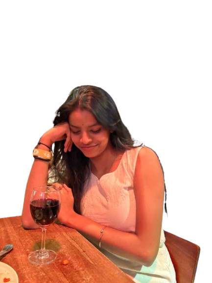
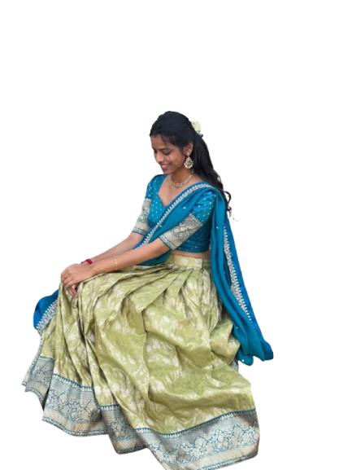
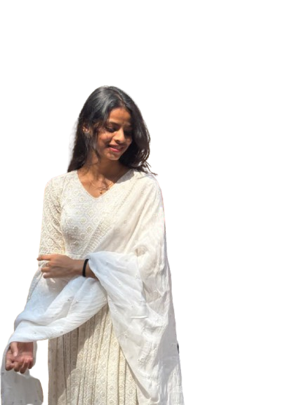
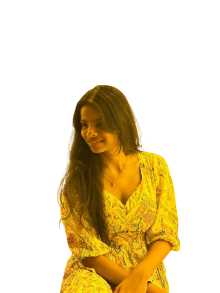
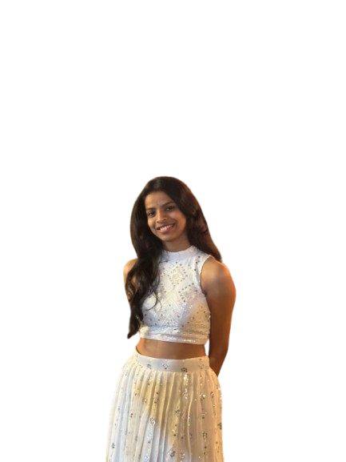

I’m so grateful that the world was blessed with you on this day. I don’t even know where to begin, because how do you put into words someone who means this much? But since it’s your day, I’m going to try and I’m going to talk about you as much as I want. You are truly the most precious thing that has ever happened to me. Out of all the chaos, all the unexpected turns, all the moments life threw at me, you are my favorite miracle.
I’m so grateful that the world was blessed with you on this day. I don’t even know where to begin, because how do you put into words someone who means this much? But since it’s your day, I’m going to try and I’m going to talk about you as much as I want. You are truly the most precious thing that has ever happened to me. Out of all the chaos, all the unexpected turns, all the moments life threw at me, you are my favorite miracle.
I’m so grateful that the world was blessed with you on this day. I don’t even know where to begin, because how do you put into words someone who means this much? But since it’s your day, I’m going to try and I’m going to talk about you as much as I want. You are truly the most precious thing that has ever happened to me. Out of all the chaos, all the unexpected turns, all the moments life threw at me, you are my favorite miracle.
I’m so grateful that the world was blessed with you on this day. I don’t even know where to begin, because how do you put into words someone who means this much? But since it’s your day, I’m going to try and I’m going to talk about you as much as I want. You are truly the most precious thing that has ever happened to me. Out of all the chaos, all the unexpected turns, all the moments life threw at me, you are my favorite miracle.

I’ve seen your strength. I’ve seen the days that made you fall. I’ve seen the tears you tried to hide, the nights you overthought, the moments you felt like you weren’t enough. And yet you still wake up and smile. You still show up for everyone. You still choose kindness. And that’s why I’m so proud of you. I’m proud of everything you’ve achieved, not just the big wins, but the silent battles you fought when no one was watching.
I’m proud of the way you carry yourself even when things get heavy. I’m proud of your heart, the way you love, the way you care, the way you give. You are the strongest person I’ve ever known, and you always will be. You’re the kind of woman people pray for. The best daughter. The best sister. The best friend. The best mother. The best partner. You become whatever role life gives you and you shine in it.

But beyond all those roles, you are simply you. And that you is something rare. Sometimes I genuinely don’t know who I would be without you in my life. You changed me in ways you don’t even realize. You made me softer, calmer, better. Thank you for coming into my life. Thank you for choosing to stay. Thank you for being you. And I want you to know something clearly, no matter how much we grow, no matter how complicated life gets, no matter how the world changes around us, I will always be here. Not sometimes. Not when it’s convenient. Always.

You are safe with me. When you are sad and don’t know how to explain what you’re feeling, come to me. When you feel broken and think no one understands, come to me. When you’re happy and your heart feels too full, come to me. When you’re confused about life, about people, about decisions, come to me. I promise I will listen without judging. I promise I will try to understand before I react. I promise I will choose your happiness.

You never have to pretend to be strong with me. You never have to hide your tears or swallow your fears. With me, you can just be you, laugh loudly, cry freely, be dramatic, be silly, be emotional, be confused, be excited. I’ll be there through every version of you. You have the most beautiful soul. And yes, you are the prettiest. The way your eyes speak even when your lips don’t. The way your smile changes the entire atmosphere of a room.
The way your presence makes everything feel lighter, calmer, safer. You don’t just walk into a room, you shift the energy of it. I miss you sometimes more than I say. I care about you more than I show. And I love you in ways words will never fully explain. On your birthday, I just want you to feel surrounded by love, pure love. I want this year to heal the parts of you that got tired. I want it to reward your efforts.

I want it to bring you peace when your mind is loud. I want it to bring you success in everything you quietly pray for. I want it to bring laughter that makes your stomach hurt and happiness that feels permanent. No matter what you’ve been through, you will be fine. You will rise. You always do. And I don’t care if you’re the elder one, the responsible one, the strong one in everyone’s eyes, to me, you’ll always be my baby. I’ll always want to protect you.
I’ll always want to see you safe, smiling, cared for. There’s so much more I could say about you. I could write about your eyes. Your voice. Your stubbornness. Your softness. The way you pretend to be okay. The way you overthink. The way you love so deeply. But I’ll stop here before this turns into a whole book. Just remember this, you are never alone. Not today. Not tomorrow. Not ever. You have me. Through everything. Always. Once again, Happy Birthday to the best thing.